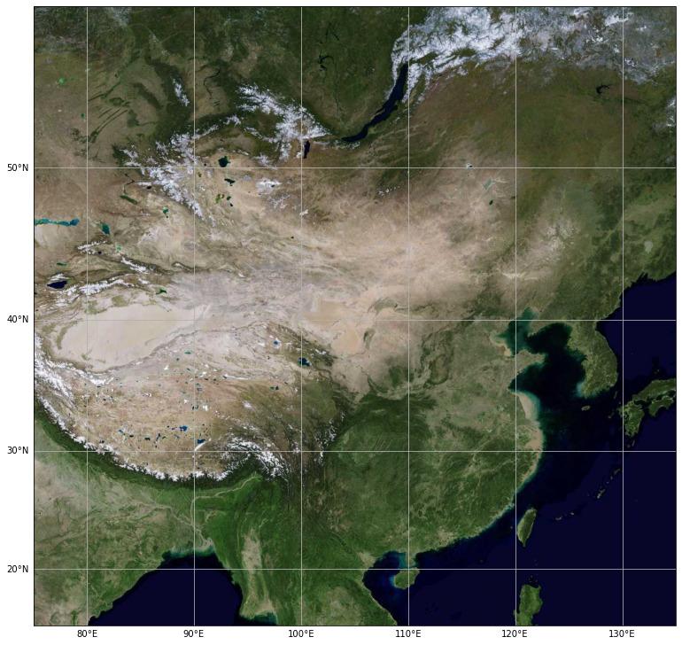

Cartopy 地图绘制（3）
Contents
Cartopy 地图绘制（3）¶

Cartography Python
主讲人：李显祥
大气科学学院
地图背景 - 天地图¶
天地图（和其它很多种地图服务）都采用 Web Map Tile Service (WMTS) 来提供地图服务。
常用的有 Google，OpenStreetMap等
国内有百度、高德等
由于它们都遵循相同的规范，我们可以通过修改 cartopy 中已有的 Google 地图类来实现天地图的调用。
import matplotlib.pyplot as plt
import cartopy.io.img_tiles as cimgt
import cartopy.crs as ccrs
from cartopy.io import shapereader
from cartopy.mpl.gridliner import LONGITUDE_FORMATTER, LATITUDE_FORMATTER
headers='Mozilla/5.0' #{'User-Agent': 'Mozilla/5.0'}
tk = <your-token>
class TDT(cimgt.GoogleWTS):
def __init__(self, desired_tile_form='RGB', cache=False):
super().__init__(desired_tile_form=desired_tile_form,
user_agent = headers)
def _image_url(self, tile):
x, y, z = tile
url = 'http://t0.tianditu.gov.cn/DataServer?T=vec_w&x=%s&y=%s&l=%s&tk=%s'% (x, y, z, tk)
return url
class TDT_ter(cimgt.GoogleWTS):
def __init__(self, desired_tile_form='RGB', cache=False):
super().__init__(desired_tile_form=desired_tile_form,
user_agent = headers)
def _image_url(self, tile):
x, y, z = tile
url = 'http://t0.tianditu.gov.cn/DataServer?T=ter_w&x=%s&y=%s&l=%s&tk=%s'% (x, y, z, tk)
return url
class TDT_img(cimgt.GoogleWTS):
def __init__(self, desired_tile_form='RGB', cache=False):
super().__init__(desired_tile_form=desired_tile_form,
user_agent = headers)
def _image_url(self, tile):
x, y, z = tile
url = 'http://t0.tianditu.gov.cn/DataServer?T=img_w&x=%s&y=%s&l=%s&tk=%s'% (x, y, z, tk)
return url
def make_map(projection=ccrs.PlateCarree()):
fig, ax = plt.subplots(figsize=(13, 13),
subplot_kw=dict(projection=projection))
gl = ax.gridlines(draw_labels=True)
gl.top_labels = gl.right_labels = False
gl.xformatter = LONGITUDE_FORMATTER
gl.yformatter = LATITUDE_FORMATTER
return fig, ax
extent = [75, 135, 15, 55] #21.5, 23.5] #广东图
#request = TDT() #矢量图层
request = TDT_img() #影像
#request = TDT_ter() #地形
fig, ax = make_map(projection=request.crs)
ax.set_extent(extent)
ax.add_image(request, 5)# leve l=10 缩放等级

绘制台风路线动画¶
import matplotlib.pyplot as plt
import cartopy.crs as ccrs
from cartopy.mpl.gridliner import LONGITUDE_FORMATTER, LATITUDE_FORMATTER
import cartopy.io.img_tiles as cimgt
import cartopy.feature as cfeat
from cartopy.io.shapereader import Reader
import pandas as pd
%matplotlib inline
def make_plot(WTS,level):
extent = [72, 135, 15, 54]
shp= '../shp_file/china.shp'
proj = ccrs.PlateCarree()
fig, ax = plt.subplots(figsize=(10, 6), subplot_kw=dict(projection=WTS.crs))
gl = ax.gridlines(draw_labels=True)
gl.top_labels = gl.right_labels = False
gl.xformatter = LONGITUDE_FORMATTER
gl.yformatter = LATITUDE_FORMATTER
ax.set_extent(extent)
ax.add_image(WTS, level)
reader = Reader(shp)
provinces = cfeat.ShapelyFeature(reader.geometries(),proj, edgecolor='white', facecolor='none')
ax.add_feature(provinces, edgecolor='w',linewidth=1)
sub_extent = [105, 125, 0, 25]
sub_ax = fig.add_axes([0.66, 0.13, 0.135, 0.155], projection=WTS.crs)
sub_ax.set_extent(sub_extent)
sub_ax.add_image(WTS, level)
sub_ax.add_feature(provinces, edgecolor='w',linewidth=1)
return fig,ax,sub_ax
typhoon = pd.read_csv("1909.csv")
typhoon.dropna(subset=['wind'],inplace=True)
typhoon = typhoon.reset_index()
typhoon['class'] = ''
typhoon.loc[(typhoon['wind']>=10.8) & (typhoon['wind']<=17.1),'class'] = 'TROPICAL DEPRESSION'
typhoon.loc[(typhoon['wind']>17.2) & (typhoon['wind']<=24.4),'class'] = 'TROPICAL STORM'
typhoon.loc[(typhoon['wind']>24.5) & (typhoon['wind']<=32.6),'class'] = "SEVERE TROPICAL STORM"
typhoon.loc[(typhoon['wind']>32.7) & (typhoon['wind']<=41.4),'class'] = "TYPHOON"
typhoon.loc[(typhoon['wind']>41.5) & (typhoon['wind']<=50.9),'class'] = "SEVERE TYPHOON"
typhoon.loc[(typhoon['wind']>51),'class']="SUPER TYPHOON"
#color_dict = {'TROPICAL DEPRESSION': '#7fffd4', 'TROPICAL STORM': '#008000', "SEVERE TROPICAL STORM": '#0000ff',
# "TYPHOON": '#ffff00', "SEVERE TYPHOON": '#ffa500', "SUPER TYPHOON": '#ff4500'}
color_dict = {'TROPICAL DEPRESSION': 'lime', 'TROPICAL STORM': 'blue', "SEVERE TROPICAL STORM": 'yellow',
"TYPHOON": 'orange', "SEVERE TYPHOON": 'red', "SUPER TYPHOON": 'darkred'}
import matplotlib.animation as animation
wts = TDT_img()
fig,ax,sub_ax = make_plot(wts,5)
dots, = ax.plot([], [], linewidth=2.5, transform=ccrs.PlateCarree())
line = ax.scatter(None,None, s=10, alpha=0.8, transform=ccrs.PlateCarree())
sub_dots, = sub_ax.plot([], [], linewidth=2.5,transform=ccrs.Geodetic())
sub_line = sub_ax.scatter(None, None, s=10, alpha=0.8, transform=ccrs.PlateCarree())
ax.annotate('Typhoon: %s\n Date: %s\n Data: http://typhoon.weather.com.cn/\n' % ('Lekima(ID-1909)', "2019-08-04 14:00:00"),
xy=(0, 1), xytext=(12, -12), va='top', ha='left',xycoords='axes fraction', textcoords='offset points')
def animate(i):
a0, b0 = typhoon.at[i,"lon"], typhoon.at[i,"lat"]
a1, b1 = typhoon.at[i+1,"lon"], typhoon.at[i+1,"lat"]
dots, = ax.plot((a0,a1),(b0,b1), linewidth=2.5,color=color_dict[typhoon.at[i+1,"class"]],
transform=ccrs.PlateCarree())
line = ax.scatter(a0, b0, s=10, c=color_dict[typhoon.at[i,"class"]], alpha=0.8,
transform=ccrs.PlateCarree())
sub_dots, = sub_ax.plot((a0,a1),(b0,b1), linewidth=2.5,
color=color_dict[typhoon.at[i+1,"class"]], transform=ccrs.Geodetic())
sub_line = sub_ax.scatter(a0, b0, s=10, c=color_dict[typhoon.loc[i,"class"]],
alpha=0.8, transform=ccrs.PlateCarree())
return dots, line, sub_dots, sub_line
ani = animation.FuncAnimation(fig, animate, len(typhoon)-1,interval=50, blit=True, repeat=False)
ani.save('typhoon_1909.gif',dpi=80)
MovieWriter ffmpeg unavailable; using Pillow instead.